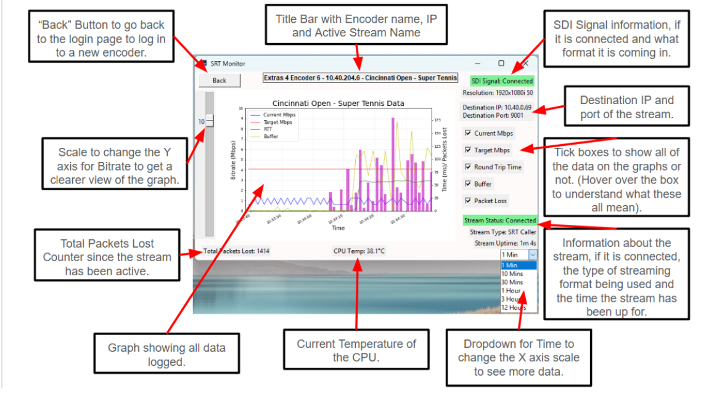

A showcase of engineering projects, built and designed by me over the years.
Add your project description here. What does it do? What was the goal? What problem does it solve?
You can describe the mechanics, the tech stack, or the inspiration behind this project.
This application allows you to connect through the Magewell API to a Magewell Ultra Encode SDI and query the statistics of the stream being sent out from the encoder.
This then logs it all in a graph and around the GUI, with configurable time durations to show the data and select what data you want to use.
When opened as an executable it can be opened multiple times to monitor numerous streams at once.
This is coded in Python. Executable can be found on my Github.

This is a small networking device that allows you to configure an IP Address and Subnet Mask, then plug into your network and you can ping this device from a remote location using a PC.
The device has uses a Waveshare RP2040-ETH board to handle the ethernet connection, drive the OLED display, handle the button presses and reprogram the boards IP and Subnet.
It has a 400 mAh battery and is charged using a TP4056 Battery charger.
The RP2040-ETH only has a 10Mb connection speed, so will not be able to connect to a switch or PC that cannot handle a 10Mb connection.
Future Upgrades:
- 100Mb Connection speed
- Device that can ping as well as be pinged
- Improve 3D prints to fit flush without Blue Tack filler
A small 3D Printed casing to house a TP4056 charging module and screw terminal block to wire into a battery.
- Solder the B+ and B- pads on the TP4056 to short wires.
- Mark on the terminal what is the positive hole and what is the negative.
- Then solder the wires to the connector block ports. Make sure to push the wires under the block first to keep them in place.
- Next slide in the TP4056 board and then push in the connector block to fit in the gap nicely and so the legs go under the middle of the centre block.
- Then slide the top on and label.
Note tolerances are not perfect for the little slide top and required some filing to fit snugly in the case.
This Spherical Parallel Manipulator was originally printed with all of the parts from the original model by plusalphaDesigns (See the second last photo). From there changes and alterations were made to improve the build to make it more efficient and suited to my needs, as well as a whole new control system using a Raspberry Pi.
What was kept the same:
The central gears and all three sets of links were kept the same from the initial build, as no real big changes could be made for these parts without massively changing the designs to put in bearings to help reduce friction.
As well as this all of the pins were kept the same.
These parts from the original plusalphaDesign build were:
- Gear Level 1
- Gear Level 2
- Gear Level 3
- 90deg Link : 3ea
- Link Level 1
- Link Level 2
- Link Level 3
- Link Pin : 3ea
- Stack Pin
- Stage Pin : 3ea
Changes
The main mechanical changes in the new build were:
The use of Nylock nuts to stop the nuts on the joints coming loose that seemed to happen often.
The Top Stage was redesigned by measuring the 3D print and 3D modelling one exactly the same size as it to allow it to fit onto the original links. Then a cut was made into it the same size as the camera used in the build to allow it to sit in nicely, with a hole in the bottom to allow the camera to be screwed in. The camera used can be found here.
Amazon Link to CameraThe original build had a 1:1 gear ratio, in this build this was changed to a 2:1 ratio to improve the torque in the system and allow it to comfortably carry more load. By keeping the central gears the same size and then reducing the diameter of the servo gears from the original 40mm down to 20mm this gear ratio was achieved.
With the newly designed base, this made room for some more changes. The large triangular base made the design more sturdy and unlikely to tip, as well as allowing for an arrow on one corner to be made to show which way the base and the system should face. With the new smaller servo gears, the servo mount brackets had to be moved closer to the central gear shaft to allow for this smaller diameter. Some calibration markers also were added, this allowed the servo gears to be set at a zero point and then give an easy visual aid as to where the gear has moved.
As well as this, all links that touched eachother had metal washers added to them and were sanded down to try and reduce friction and make the system as smooth as possible
Certain parts such as the motor brackets and gears heights were slightly lowered to make the gears all line up more flush to stop any gears getting caught.
Electronics
All of the electronics were controlled by a Raspberry Pi 4, however a Raspberry Pi 2 or 3 should work perfectly fine for this purpose. The 3 servos were powered from an external power supply. An app on Tkinter was created to control the servos directions and movements as well as relay back real time data on the servo positions. To get this data back into the RPI, an MCP3008 ADC was used to convert the signal from the analog feedback pin of the servo to a digital signal for the RPI to take in. This data was then presented in number format as well as graphically for each servo.
The electrical schematic can be seen in the last photo.
A video of the system working with the app at the same time can be found here: Vimeo Link
The python code for the Raspberry Pi has been included, a number of libraries seen at the top of the code have to be downloaded.
What to print:
As well as the things mentioned above from the original build that need printed off, you will also need.
- Redesigned Base
- Redesigned Top Platform
- Calibration Marker : 3ea
- Smaller Gear : 3ea